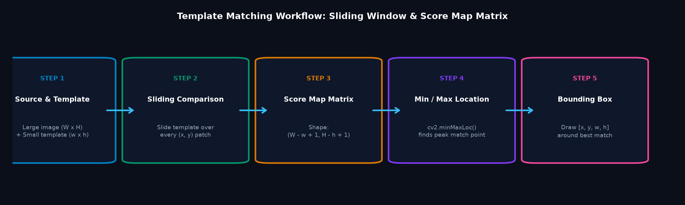
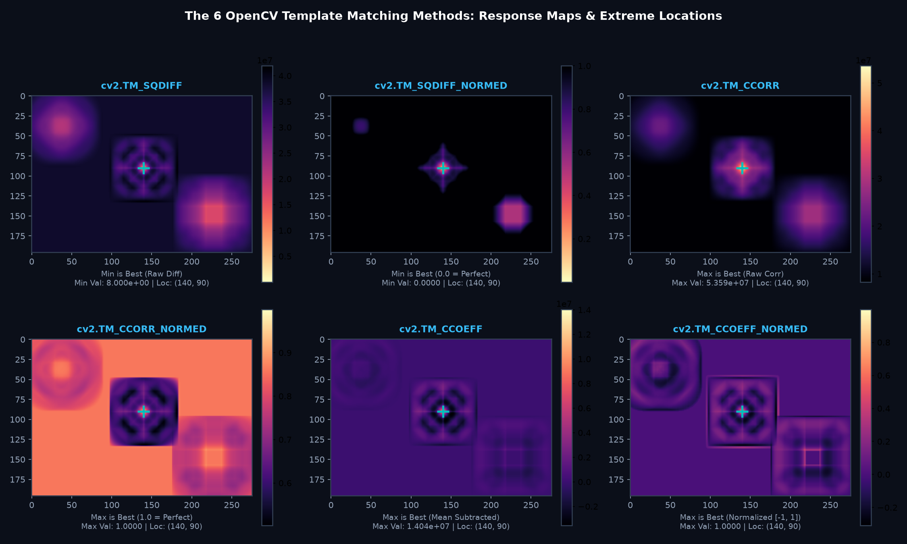
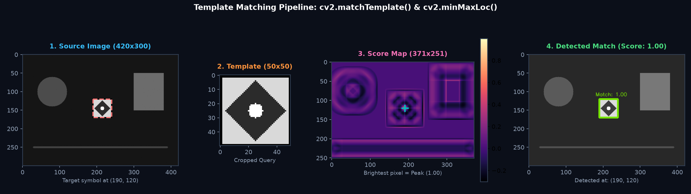
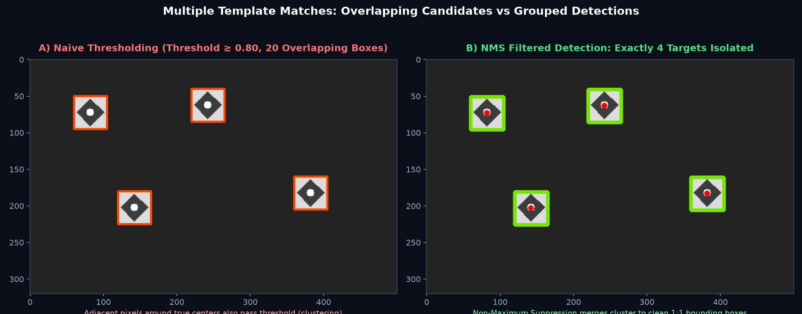
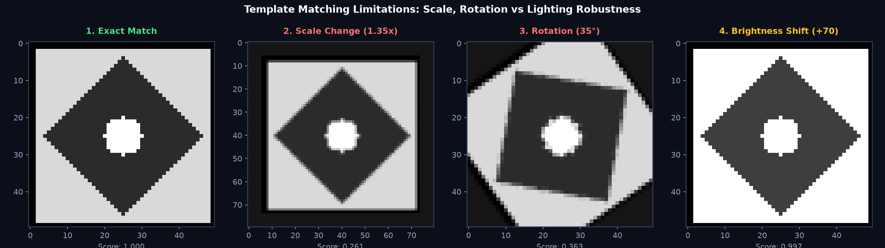

Badi source image mein se kisi choti template image (jaise logo, icon, symbol ya component) ko dhoondhne ki classical technique! Seekhein sliding window correlation, 6 standard matching methods, minMaxLoc() peak extraction, aur Non-Maximum Suppression (NMS) se multiple occurrences detect karna!
Imagine kijiye aapke desktop screenshot mein aapko ek specific "Play" button ya company logo dhoondhna hai. Aapke paas us button ki ek choti reference photo hai jise hum Template Image (w × h) kehte hain, aur poore screenshot ko Source Image (W × H) kehte hain.
OpenCV ka cv2.matchTemplate() is template ko source image par ek sliding window ki tarah 1-by-1 pixel aage sarkaata hai aur har position par similarity score calculate karta hai:

(W, H) hai aur template ka size (w, h) hai, to resulting score map ka dimension (W - w + 1, H - h + 1) hota hai. Kyunki jab template right aur bottom edge tak pahunchta hai, to wo image boundary se bahar nahi ja sakta!
OpenCV matching compare karne ke liye 6 alag-alag mathematical formulas provide karta hai. Beginners ke liye sabse zaroori rule ye samajhna hai ki best match kahan milta hai (Minimum vs Maximum):
| OpenCV Method Flag | Core Intuition | Best Match Value | Normalized? | Practical Interpretation |
|---|---|---|---|---|
cv2.TM_SQDIFF |
Sum of Squared Differences ∑(T - I)2 | MINIMUM | No (raw pixel values) | 0 par perfect match, bada number = poor match. |
cv2.TM_SQDIFF_NORMED |
Normalized Squared Difference | MINIMUM | Yes [0.0 to 1.0] | 0.0 = Perfect match, 1.0 = Worst match. |
cv2.TM_CCORR |
Cross Correlation ∑(T · I) | MAXIMUM | No (depends on brightness) | Template aur patch ko multiply karta hai. False high on bright white regions! |
cv2.TM_CCORR_NORMED |
Normalized Cross Correlation | MAXIMUM | Yes [0.0 to 1.0] | 1.0 = Perfect match, scale normalized. |
cv2.TM_CCOEFF |
Correlation Coefficient (Mean Subtracted) | MAXIMUM | No (relative contrast) | Dono ke mean brightness subtract karta hai (lighting invariant). |
cv2.TM_CCOEFF_NORMED ★ |
Normalized Correlation Coefficient | MAXIMUM | Yes [-1.0 to 1.0] | 1.0 = Perfect match, 0.0 = No correlation, -1.0 = Inverted. Industry Standard! |
cv2.TM_SQDIFF aur cv2.TM_SQDIFF_NORMED mein best match MINIMUM value (min_loc) par milta hai!CCORR aur CCOEFF) mein best match MAXIMUM value (max_loc) par milta hai!

Jab cv2.matchTemplate() run hota hai, to wo direct bounding box coordinates nahi deta, balki ek 2D grayscale response matrix deta hai. Is matrix se peak nikaalne ke liye OpenCV ka cv2.minMaxLoc() use hota hai:
min_val, max_val, min_loc, max_loc = cv2.minMaxLoc(res)Agar hum cv2.TM_CCOEFF_NORMED use kar rahe hain, to best match max_loc hota hai jo target patch ka top-left corner (x, y) hota hai:
top_left = max_locbottom_right = (top_left[0] + template_w, top_left[1] + template_h)cv2.rectangle(img, top_left, bottom_right, (0, 255, 0), 2)
import cv2
import numpy as np
source = cv2.imread('screenshot.png')
template = cv2.imread('button_icon.png')
h, w = template.shape[:2]
# 1. Grayscale mein convert karein
gray_src = cv2.cvtColor(source, cv2.COLOR_BGR2GRAY)
gray_tpl = cv2.cvtColor(template, cv2.COLOR_BGR2GRAY)
# 2. Match template run karein (Industry standard: TM_CCOEFF_NORMED)
res = cv2.matchTemplate(gray_src, gray_tpl, cv2.TM_CCOEFF_NORMED)
# 3. Peak match find karein
_, max_val, _, max_loc = cv2.minMaxLoc(res)
# 4. Bounding box draw karein
top_left = max_loc
bottom_right = (top_left[0] + w, top_left[1] + h)
cv2.rectangle(source, top_left, bottom_right, (0, 230, 118), 3)
print(f"Best match found at {top_left} with confidence score {max_val:.4f}")Agar image mein ek hi icon ya coin 4–5 baar repeat ho raha hai, to minMaxLoc() kaam nahi aayega kyunki wo sirf single global highest peak deta hai!
Multiple occurrences ke liye hum Thresholding use karte hain:
threshold = 0.80
locs = np.where(res >= threshold)Jab koi template match hota hai, to uske theek bagal wale 1-2 pixels (jaise (x+1, y) ya (x, y+1)) par bhi score 0.84 ya 0.82 aata hai. Is wajah se ek hi icon ke upar 20–30 overlapping boxes draw ho jaate hain!
Is clustering ko hatane ke liye hum Non-Maximum Suppression (NMS) use karte hain jo overlapping boxes ke cluster ko merge karke single clean bounding box banata hai:

def non_max_suppression(boxes, overlapThresh=0.3):
if len(boxes) == 0: return []
boxes = np.array(boxes, dtype=np.float32)
pick = []
x1, y1 = boxes[:, 0], boxes[:, 1]
x2, y2 = x1 + boxes[:, 2], y1 + boxes[:, 3]
area = (x2 - x1 + 1) * (y2 - y1 + 1)
idxs = np.argsort(y2)
while len(idxs) > 0:
last = len(idxs) - 1
i = idxs[last]
pick.append(i)
xx1 = np.maximum(x1[i], x1[idxs[:last]])
yy1 = np.maximum(y1[i], y1[idxs[:last]])
xx2 = np.minimum(x2[i], x2[idxs[:last]])
yy2 = np.minimum(y2[i], y2[idxs[:last]])
w = np.maximum(0, xx2 - xx1 + 1)
h = np.maximum(0, yy2 - yy1 + 1)
overlap = (w * h) / area[idxs[:last]]
idxs = np.delete(idxs, np.concatenate(([last], np.where(overlap > overlapThresh)[0])))
return boxes[pick].astype(int)
# Candidate boxes generate karein aur NMS filter chalayein
locs = np.where(res >= 0.80)
raw_boxes = [[int(pt[0]), int(pt[1]), w, h] for pt in zip(*locs[::-1])]
clean_boxes = non_max_suppression(raw_boxes, overlapThresh=0.3)
print(f"Raw candidate boxes: {len(raw_boxes)} → Clean NMS targets: {len(clean_boxes)}")Template matching ek rigid pixel correlation technique hai. Ye tabhi kaam karti hai jab target ka size aur orientation exactly template jaisa ho:

Agar target camera ke paas aane se 20% bada ho jaye, to fixed template window match nahi karegi (Score collapses!).
Target ko agar 20°–30° rotate kar diya jaye, to template matching fail ho jati hai (Rotation invariant nahi hai!).
Agar target ke upar koi ungli ya sticker aa jaye, to pixel difference badh jata hai aur match drop ho jata hai.
TM_CCOEFF_NORMED uniform lighting shifts (photo andheri ya bright hona) ko mathematically handle kar leta hai!
| Use Case Category | Real-Life Industry Workflow | Why Template Matching is Ideal |
|---|---|---|
| RPA & Desktop Automation | Software bots automatically clicking UI buttons, checkboxes, or close icons (e.g. PyAutoGUI bots). | Pixel icons on computer monitors exact scale aur zero rotation ke saath render hote hain! |
| PCB Quality Inspection | Assembly line cameras verifying if microchips, resistors, and capacitors are mounted in correct slots. | Fixed camera angle, fixed distance, uniform industrial LED lighting. |
| Watermark & Logo Tracking | Broadcast video monitoring verifying TV channel logos in broadcast streams. | Channel logos have static size and top/bottom corner positions. |
| Game Bot Automation | Detecting health bars, minimap markers, or inventory items in real-time gaming streams. | Static HUD elements maintain exact pixel resolution. |
cv2.TM_SQDIFF ke saath max_loc use karnamax_loc select karne par sabse ganda (worst) possible match select ho jayega!min_loc use karein!
cv2.error: (-215:Assertion failed) corrsize.height > 0 && corrsize.width > 0.w < W aur h < H)!
cv2.cvtColor(..., cv2.COLOR_BGR2GRAY) karein!
cv2.TM_CCOEFF_NORMED method mein perfect identical match ka score kya hota hai?TM_CCOEFF_NORMED score -1.0 se 1.0 ke beech normalize hota hai. +1.0 ka matlab hai mathematically exact identical correlation!
(W - w + 1, H - h + 1): Width = 500 - 50 + 1 = 451, Height = 400 - 40 + 1 = 361.
Ab jab humne visual objects ko template matching se locate karna seekh liya hai, agle topic mein hum image lighting aur exposure ko diagnose karna seekhenge: kaise Pixel Histograms se andheri ya overexposed photos ko pehchante hain aur CLAHE (Contrast Limited Adaptive Histogram Equalization) se crystal-clear contrast restore karte hain!